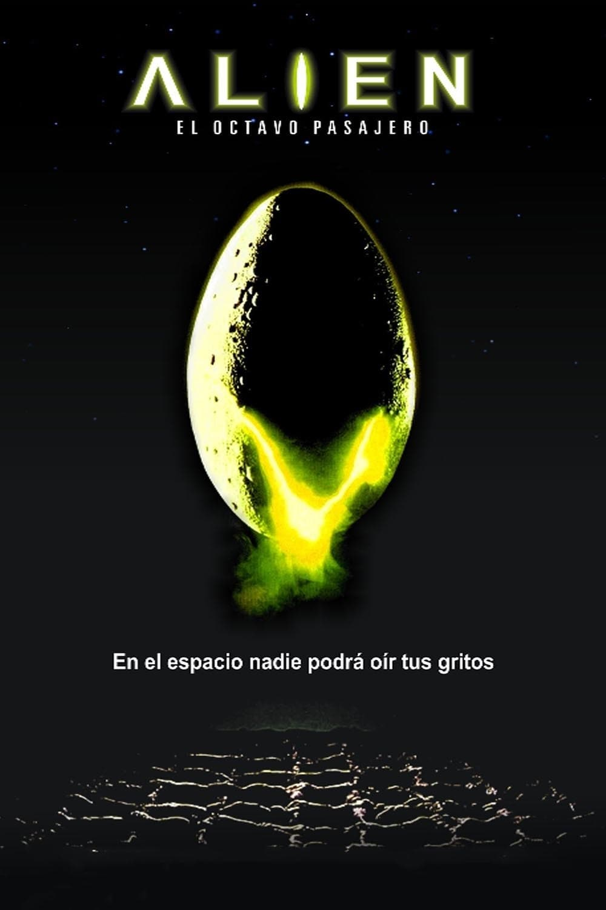
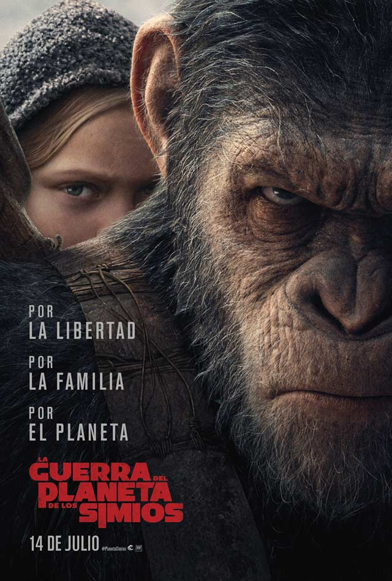

2001: Odisea en el espacio
Laburpena
Gizateriaren historiako aldiak kontatzen ditu, ez bakarrik iraganekoak, baita etorkizunekoak
ere. Duela milioika urte, homo sapiensa agertu baino lehen, primate batzuek monolito bat aurkitu
zuten, adimen handiagoko estadio batera eramaten zituena. Milioika urte geroago, ilargi batean
lurperatutako beste monolito batek zientzialarien interesa pizten du.
Egileak: Stanley Kubrick
Iraupena: 2h 22m
Argitaratze-data: 1968

Alien, el octavo pasajero
Laburpena
Nostromo espaziontzia Lurrerako itzulera bidaian doala, eskifaiako zazpi bidaiariak euren
loalditik esnatu dira. Espaziontziko Ama ordenagailu zentralak planeta batetik datorren
izaki bizidun ezezagun baten transmisio misteriotsu bat sumatu du. Espaziontzia komunikazio
horren jatorria ikertzeko, planeta ezezagun hartara zuzendu da.
Egileak: Ridley Scott
Iraupena: 1h 57m
Argitaratze-data: 1979

El Planeta De Los Simios
Laburpena
1947. urtea, AEBetako Maine estatuko Portland hiria. Bere emaztearen hilketa leporatuta Andrew
Dufresnek bizi osorako espetxera zigorra jaso eta Shawshank espetxera eramana da. Hasiera batean
espetxea jasateko gai ez zirudien pertsona ahula izan arren, urteak igaro hala, espetxeko zuzendariaren
konfiantza eta preso-kideen errespetua irabaziz joango da,bereziki Red presoarena, espetxe barneko
eroskeri mafia taldeko buruzagia dena, biak adiskide min egingo direlarik..
Egileak: Franklin Schaffner
Iraupena: 1h 55m
Argitaratze-data: 1968

La Novia De Frankestein
Laburpena
Pretorios doktoreak emakume bat sortzeko erronka bota dio Frankensteini, jatorrizko munstroaren
haserrea piztuz. Esperimentuak aurrera egin ahala, dilema etikoak eta ustekabeko ondorioak
areagotu egiten dira, zientziaren eta moralaren mugak zalantzan jarriz. Kontakizuna kezkagarria
eta zirraragarria da.
Egileak: James Whale
Iraupena: 1h 15m
Argitaratze-data: 1935